在 VS Code 中管理 Java 项目
Project Manager for Java 扩展帮助你管理 Java 项目及其依赖项。它还可以帮助你创建新的 Java 项目、包和类。要在 Visual Studio Code 中获得完整的 Java 语言支持，你可以安装 Extension Pack for Java，其中包含 Project Manager for Java 扩展。
>有关如何开始使用此扩展包的详细信息，你可以查看Java 入门教程。
项目视图
Java 项目视图帮助你查看 Java 项目及其依赖项，并提供项目管理任务的入口点。
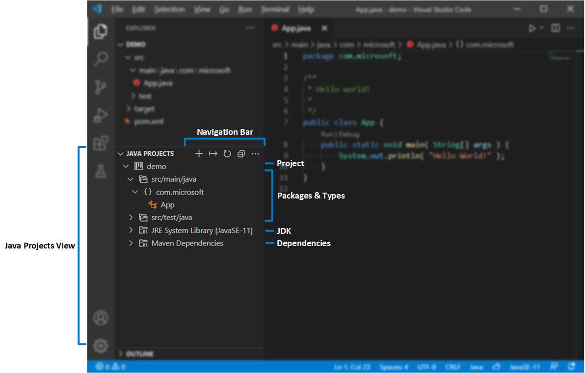
>默认情况下，Java 项目视图显示在资源管理器视图下方。如果你看不到它，请尝试点击资源管理器标题栏中的 ... 按钮，然后选择Java 项目。
在导航栏的溢出按钮中，有更多可用的选项。例如，你可以在分层视图和平面视图之间切换。
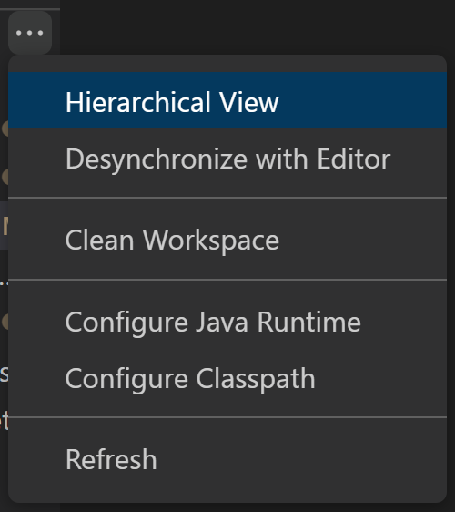
你可以在资源管理器中的节点旁边找到一些按钮，这些按钮为某些操作提供了有用的快捷方式。
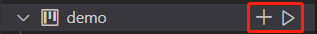
每个节点的上下文菜单中还有许多有用的功能，你可以在资源管理器中右键点击节点来展开它。
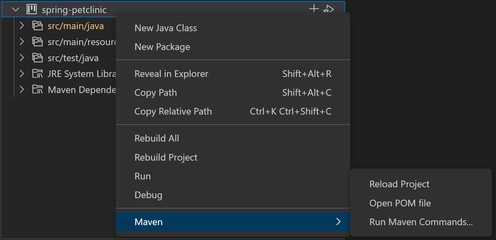
创建新的 Java 项目
你可以通过点击导航栏中的 + 按钮，或通过命令面板（kb(workbench.action.showCommands)）中的命令：Java: Create Java Project... 来创建新的 Java 项目。在创建过程中，VS Code 会根据你的项目类型协助安装所需的扩展，如果这些扩展尚未安装的话。
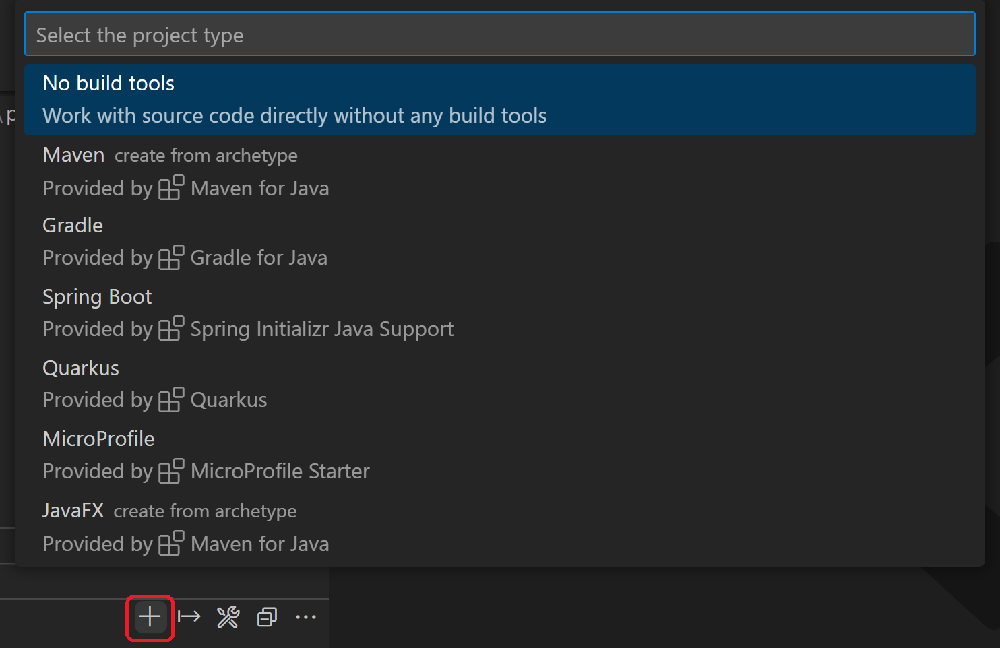
导入 Java 项目
你可以通过文件 > 打开文件夹... 直接将现有的 Java 项目和模块导入到工作区（请确保打开的文件夹中包含你的构建工具脚本，例如 pom.xml 或 build.gradle）。VS Code for Java 将自动检测你的项目并导入它们。
当你向项目中添加新模块时，你可以触发命令 Java: Import Java projects in workspace 将它们导入到工作区。此命令有助于将新项目导入到工作区，而无需重新加载 VS Code 窗口。
导出为 JAR
你可以从项目视图中导出构建为 JAR，或通过运行命令 Java: Export Jar... 来导出。
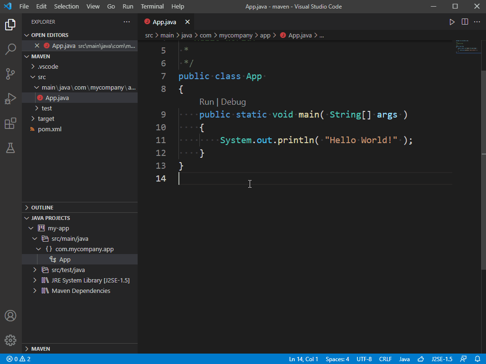
为项目配置运行时
随着 Java 的发展，开发人员通常会使用多个版本的 JDK。你可以通过设置 java.configuration.runtimes 将它们映射到本地安装路径。该设置具有以下格式：
"java.configuration.runtimes": [
{
"name": "JavaSE-1.8",
"path": "/usr/local/jdk1.8.0_201"
},
{
"name": "JavaSE-11",
"path": "/usr/local/jdk-11.0.3",
"sources" : "/usr/local/jdk-11.0.3/lib/src.zip",
"javadoc" : "https://docs.oracle.com/en/java/javase/11/docs/api",
"default": true
},
{
"name": "JavaSE-12",
"path": "/usr/local/jdk-12.0.2"
},
{
"name": "JavaSE-13",
"path": "/usr/local/jdk-13"
}
]注意：你可以通过在条目中添加 "default": true 来将其中一个设置为默认值。默认 JDK 将用于你的非托管文件夹（没有构建工具的项目）。
要查看哪些 JDK 用于你的项目，你可以在命令面板（kb(workbench.action.showCommands)）中触发命令 Java: Configure Java Runtime。此命令将打开一个视图，显示项目的运行时信息：
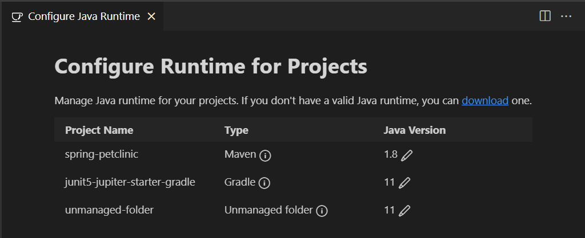
更改 Maven 和 Gradle 项目的 JDK
如果你想更改 Maven 或 Gradle 项目的 JDK 版本，你需要在构建脚本（pom.xml 或 build.gradle）中更新它。你可以点击 来查看如何进行此类更改。点击 将导航到项目的构建脚本文件。
更改非托管文件夹的 JDK
要更改非托管文件夹（没有任何构建工具）的 JDK，你可以点击 按钮。它将列出所有 JDK，你可以为你的非托管文件夹选择一个。
下载 JDK
如果你想下载新的 JDK，你可以点击 download 链接，或在命令面板（kb(workbench.action.showCommands)）中触发命令 Java: Install New JDK。它将打开一个新视图，引导你下载 JDK。
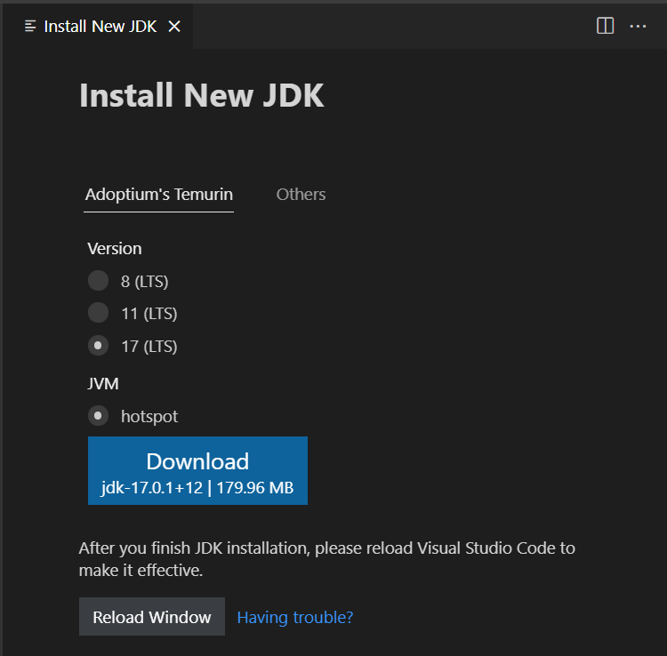
注意：要启用 Java 预览功能，请参阅如何在 VS Code 中使用新的 Java 版本。
为非托管文件夹配置类路径
Project Management for Java 扩展提供了一个用户界面来配置非托管文件夹的类路径。可以在类路径配置页面中手动设置类路径。你可以通过从命令面板（kb(workbench.action.showCommands)）执行 Java: Configure Classpath 命令来打开它。
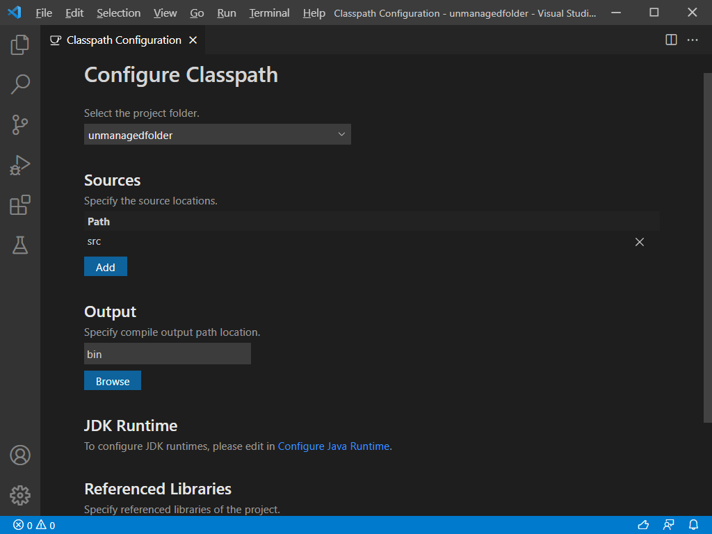
在某些罕见情况下，你可能需要通过从命令面板（kb(workbench.action.showCommands)）执行 Java: Clean Java Language Server Workspace 命令来清理 Java 工作区，以便让语言服务器重新构建你的依赖项。
依赖管理
添加 Maven 依赖
对于 Maven 项目，你可以通过点击项目视图中 Maven Dependencies 节点旁边的 + 图标来添加依赖。
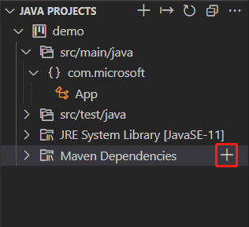
管理非托管文件夹的依赖
如果你的项目是一个没有任何构建工具的非托管文件夹，你可以通过点击 Referenced Libraries 节点或其下项目上的 + 图标或 - 图标来管理依赖项，或者你也可以直接将 jar 库文件拖放到 Referenced Libraries 节点上。
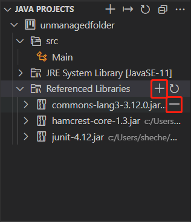
你还可以在类路径配置页面中管理依赖项。请参阅：配置非托管文件夹的类路径
在后台，settings.json 中有一个设置 java.project.referencedLibraries。以下是有关如何自定义此设置的详细信息。
包含库文件
要引用的库文件使用一组 glob 模式来描述。
例如：
"java.project.referencedLibraries": [
"library/**/*.jar",
"/home/username/lib/foo.jar"
]上述设置将把工作区 library 文件夹中的所有 .jar 文件以及来自指定绝对路径的 foo.jar 添加到项目的外部依赖项中。
然后，VS Code 会监视这些引用库文件，如果这些依赖文件中的任何一个发生更改，项目将被刷新。
默认情况下，VS Code 将使用 glob 模式 lib/*/.jar 引用工作区 lib 目录中的所有 JAR 文件。
排除某些库文件
如果你想从项目中排除某些库文件，你可以展开 java.project.referencedLibraries 来使用 include/exclude 字段，并添加一个 exclude glob 模式：
"java.project.referencedLibraries": {
"include": [
"library/**/*.jar",
"/home/username/lib/foo.jar"
],
"exclude": [
"library/sources/**"
]
}在上面的示例中，library/sources 文件夹中的任何二进制 JAR 文件都将作为项目的外部依赖项被忽略。
附加源文件 jar 包
默认情况下，引用的 {binary}.jar 将尝试在同一目录中搜索 {binary}-sources.jar，如果找到匹配项，则将其作为源文件附加。
如果你想手动指定一个 JAR 文件作为源文件附件，你可以在 sources 字段中提供键值映射：
"java.project.referencedLibraries": {
"include": [
"library/**/*.jar",
"/home/username/lib/foo.jar"
],
"exclude": [
"library/sources/**"
],
"sources": {
"library/bar.jar": "library/sources/bar-src.jar"
}
}通过这种方式，bar-src.jar 作为源文件附加到 bar.jar。
轻量级模式
VS Code for Java 支持两种模式：轻量级模式和标准模式。在轻量级模式下，语言服务器仅解析源文件和 JDK；在标准模式下，导入的依赖项会被解析，项目由语言服务器构建。轻量级模式最适合以下情况：你需要一个快速启动的轻量级环境来处理源文件，例如阅读源代码、在源代码和 JDK 之间导航、查看大纲和 Javadoc，以及检测和修复语法错误。此外，代码补全在源文件和 JDK 的范围内受支持。
轻量级模式不解析导入的依赖项，也不构建项目，因此它不支持运行、调试、重构、代码检查或检测语义错误。要使用这些功能，你需要将工作区从轻量级模式切换到标准模式。
你可以通过配置 java.server.launchMode 来控制以哪种模式启动，选项如下：
Hybrid（默认）- 首先，工作区以轻量级模式打开。如果你的工作区包含未解析的 Java 项目，系统会询问你是否切换到标准模式。如果你选择稍后，它将保持在轻量级模式。你可以点击状态栏上的语言状态项手动切换到标准模式。Standard- 工作区以标准模式打开。LightWeight- 工作区以轻量级模式打开。你可以点击状态栏上的语言状态项手动切换到标准模式。
语言状态项使用不同的图标指示当前工作区处于哪种模式。
- - 工作区以轻量级模式打开。
- - 工作区正在以标准模式打开的过程中。
- - 工作区以标准模式打开。
点击语言状态项可切换到标准模式。
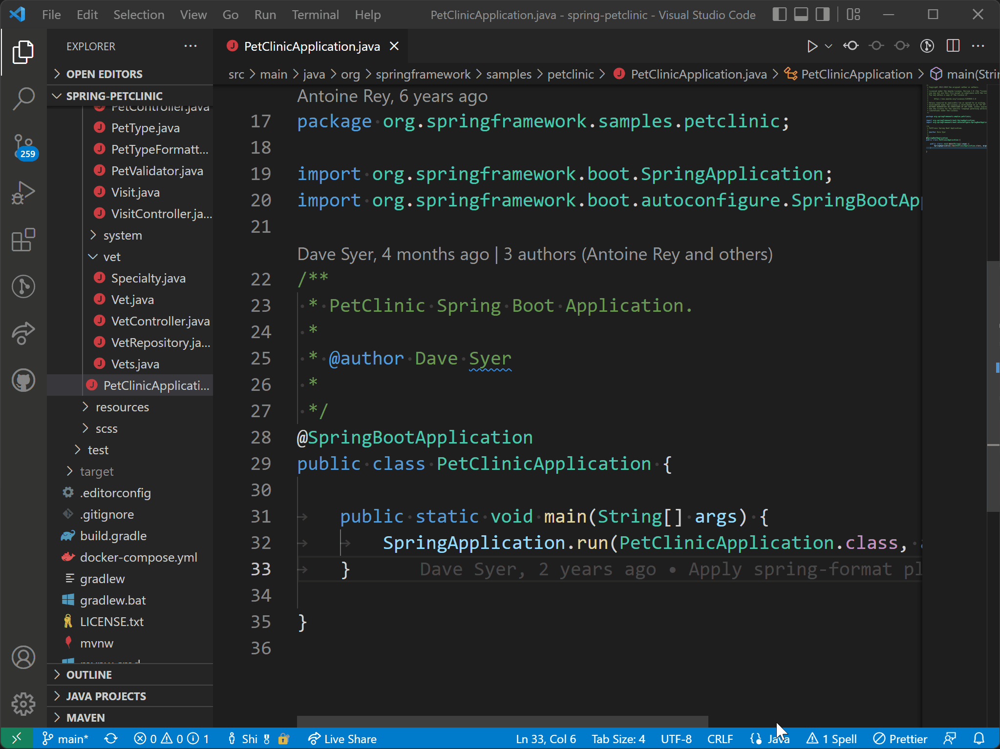
构建状态
当你在 Visual Studio Code 中编辑 Java 源代码时，Java 语言服务器正在构建你的工作区，为你提供必要的语言功能。你可以通过点击状态栏中的语言状态项来查看详细的构建任务状态，并观察后台发生的情况。当通知显示语言服务器正在打开 Java 项目时，你也可以选择检查详情链接来查看构建任务状态。
其他资源
有几个 Visual Studio Code 扩展可以支持 Java 的不同构建系统。以下是几个流行构建系统的扩展。
- Maven for Java
- Gradle for Java
- Bazel for Java（Bazel 用于
BUILD文件，不包含 Java 集成）
如果你在使用上述功能时遇到任何问题，可以通过提交 issue 与我们联系。
后续步骤
继续阅读以了解更多信息：